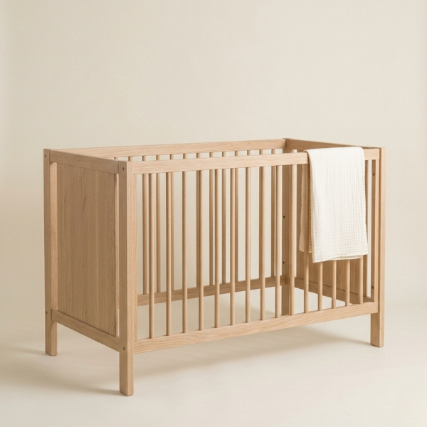
Scandi Oak Crib
Solid FSC-certified oak with convertible design
View ProductAs an affiliate, we may earn a commission from qualifying purchases at no cost to you. This helps support our curated sanctuary.
How to create a functional, growth-friendly space using the fundamentals of minimalist sustainable design.
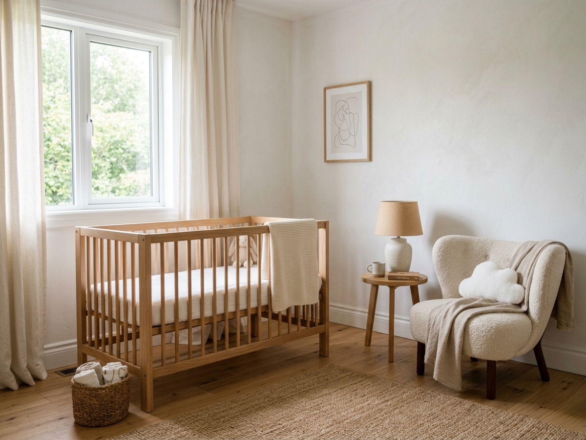
True minimalism isn't about emptiness — it's about intention. In nursery design, this translates to choosing each piece with purpose, prioritizing quality over quantity, and allowing the natural beauty of raw materials to take center stage. Unfinished oak speaks louder than painted facades. Organic cotton breathes better than synthetic blends. When we curate with restraint, we create space for what truly matters: connection, calm, and growth.
Every minimalist nursery revolves around five fundamental pieces. These aren't just furniture — they're the building blocks of daily rituals and quiet moments.
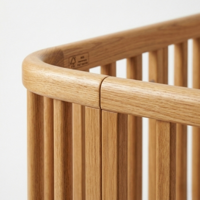
A solid wood foundation that converts with your child. Look for FSC-certified oak or maple with clean lines and no unnecessary embellishment.
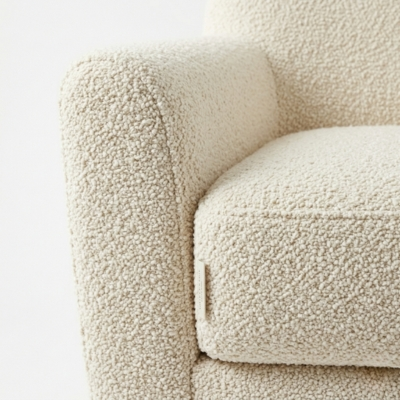
Comfort meets form in a piece you'll treasure long after nursing ends. Consider bouclé upholstery in natural tones for texture without visual weight.
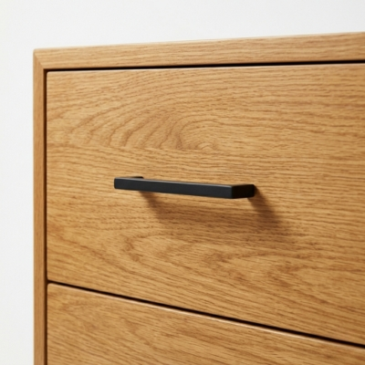
Double duty as changing table and storage. Choose pieces with thoughtful proportions that will transition seamlessly into a child's bedroom.
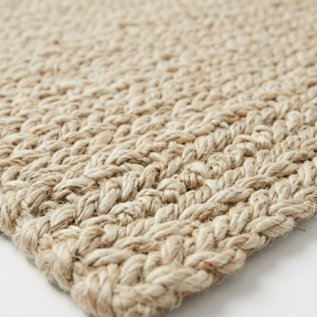
A soft landing that defines the space. Natural fibers in neutral tones create warmth without competing for attention.
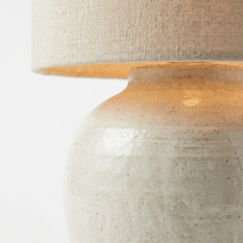
Ambient lighting for late-night visits. Ceramic or wood bases with linen shades provide the gentle glow essential for nighttime comfort.
In minimalist design, color isn't absent — it's sublimated. Instead of bold hues, we layer tonal whites, ivories, and warm greys to create depth through texture rather than contrast. A crisp white wall becomes the backdrop for an ivory linen curtain, which plays against the warm grey of a bouclé cushion.
The most sophisticated nurseries speak in whispers, not shouts.
— Design Philosophy
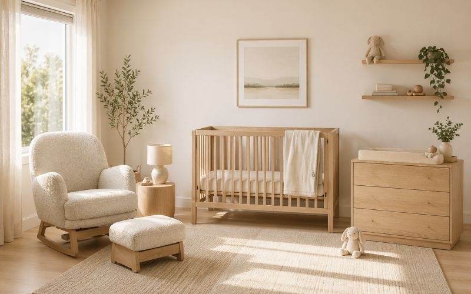
These carefully selected pieces embody minimalist principles while ensuring the highest quality for your growing family.
Essential Minimalist Pieces

Solid FSC-certified oak with convertible design
View Product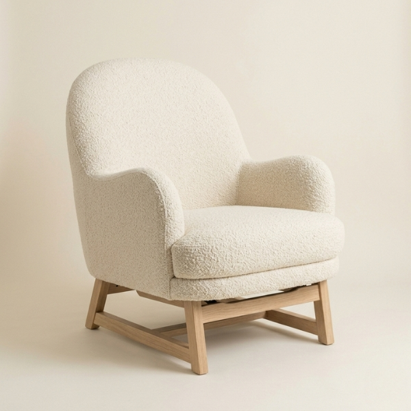
Ergonomic comfort in neutral bouclé
View Product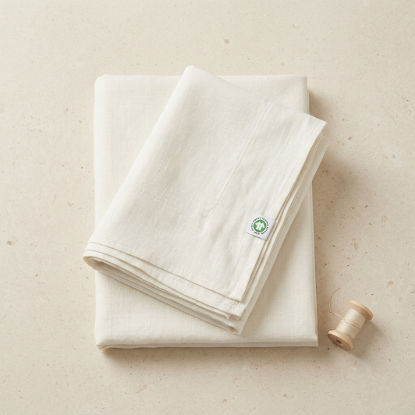
GOTS-certified organic linen in ivory
View Product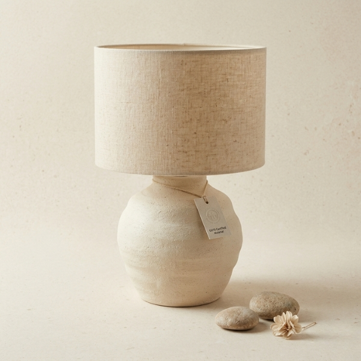
Handthrown ceramic with linen shade
View Product"When we strip away the unnecessary, what remains is pure potential — a space where both parent and child can grow into who they're meant to become."Closing Note — Velvet & Cradle
Receive weekly curated nursery inspiration and exclusive early access to our designer guides directly in your inbox.